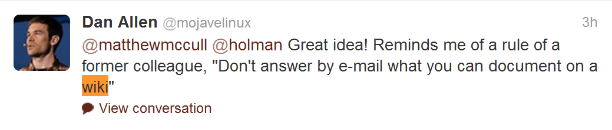

Agil utveckling
10 punkter som gör skillnad
Agil utveckling
"In the era of rapid technology evolution, it is not the biggest that survives, but the fastest. The sooner the end product is delivered without considerable defect, the sooner feedback can be received, and incorporated into the next iteration. The shorter the iterations, the better the learning and communication within the team."
- Lean Software Development (LSD)
"Embrace Change"
"Embrace Change"
"Embrace Change"
"Embrace Change"
"Embrace Change"
"Embrace Change"
"Embrace Change"
"Embrace Change"
"Embrace Change"
"Embrace Change"
"Embrace Change"
Retrospektiv
To know your future you must know your past'
- George Santayana, philosopher
Vattenfall
"It is best to know all requirements in advance"
Braindead development
Agile manifest
- Individuals and interactions over processes and tools
- Working software over comprehensive documentation
- Customer collaboration over contract negotiation
- Responding to change over following a plan
Implementation
- Processer
- Scrum
- Kanban
- Iterativ RUP
- Metoder
- Extreme programming (XP)
- The Crystal Methodologies
- Adaptive Software Development (ASD)
- Dynamic Systems Development (DSDM)
- Lean Software Development (LSD)
1. Prata samma språk
- Dokumentation SUCKS!
- Vad är viktigt
- Domain driven design
- Definition of done
- IM
1. Prata samma språk / dokumentation
1. Prata samma språk / vad är viktigt
1. Prata samma språk / domain driven design
1. Prata samma språk / domain driven design
1. Prata samma språk / domain driven design
2. Acceptera tre enkla sanningar
- Det är omöjligt att samla in alla krav i början av ett projekt.
- Vilka krav du sammlar in förändas förr eller senare.
- Det kommer alltid att finnas fler önskemål än vad det finns tid och pengar.
3. Leverera ofta
- Hitta små leverabler
- Muda
- Continuous integration
- "Keep It Releasable"
- Missa aldrig en demo
- Känn git push rytmen
3. Leverera ofta / Hitta små leverabler
4. Sätt ambitionsnivån högt, och håll kvar den där.
- Kod stil
- TDD coverage
- Statisk kod analys
- Varningar
- Teknisk skuld
5. Gör dig själv onödig
- Transperant
- wiki
- tdd
- clean code
5. Gör dig själv onödig / wiki
5. Gör dig själv onödig / tdd
5. Gör dig själv onödig / clean code

6. Få situationen att synas tydligt
- Team velocity
- Inte en åtgärd på mer än 8h
- Metrics
6. Få situationen att synas tydligt / stangelation
7. Gör teamet ansvarig
- Demo
- "Practice Collective Ownership"
- Blame
8. Heja på varandra
- Vem vill annars göra sig onödig?
- Vem vill annars skriva wiki artiklar?
- Vem vill annars arbeta bort sin nyckel position?
- Vem vill annars ta delansvar för en insats de inte var direkt inkopplade på?
- Vem vill annars vara tydlig i sitt arbete?
9. Det finns inte bara en ledare
Roller är en RUP grej där man ser personen som en resurs, en siffra i ett exceldokument. En resurs man inte riktigt litar på, en resurs som måste detaljstyras.
Risk med roller är att det är demotiverande, fördummande.
10. Kaizen
- På projekt nivå
- På personlig nivå
Kaizen (japanska: 改善, kai-zen, "förbättring") är ett begrepp inom management myntat av Taiichi Ohno (大野 耐)
“The man who makes no mistakes does not usually make anything”
E.J. Phelps
“All we are doing is looking at the time line, from the moment the customer gives us an order to the point when we collect the cash. And we are reducing the time line by reducing the non-value adding wastes.”
Taiichi Ohno
"The most dangerous kind of waste is the waste we do not recognize."
Shigeo Shingo